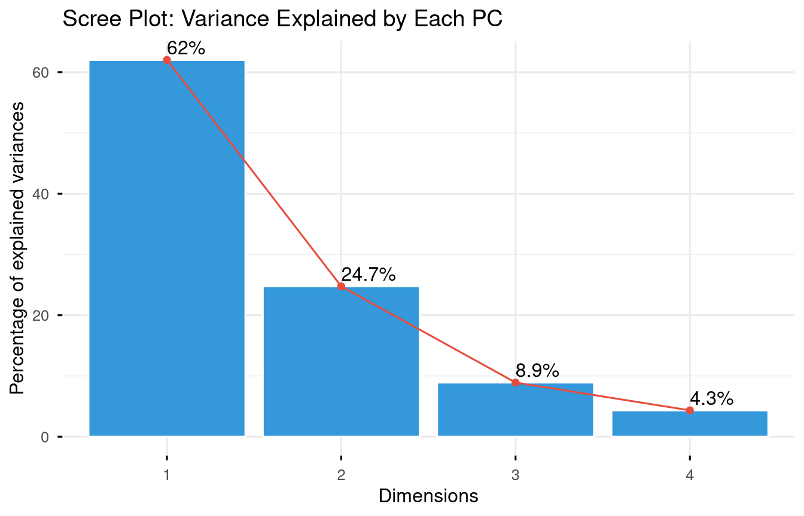
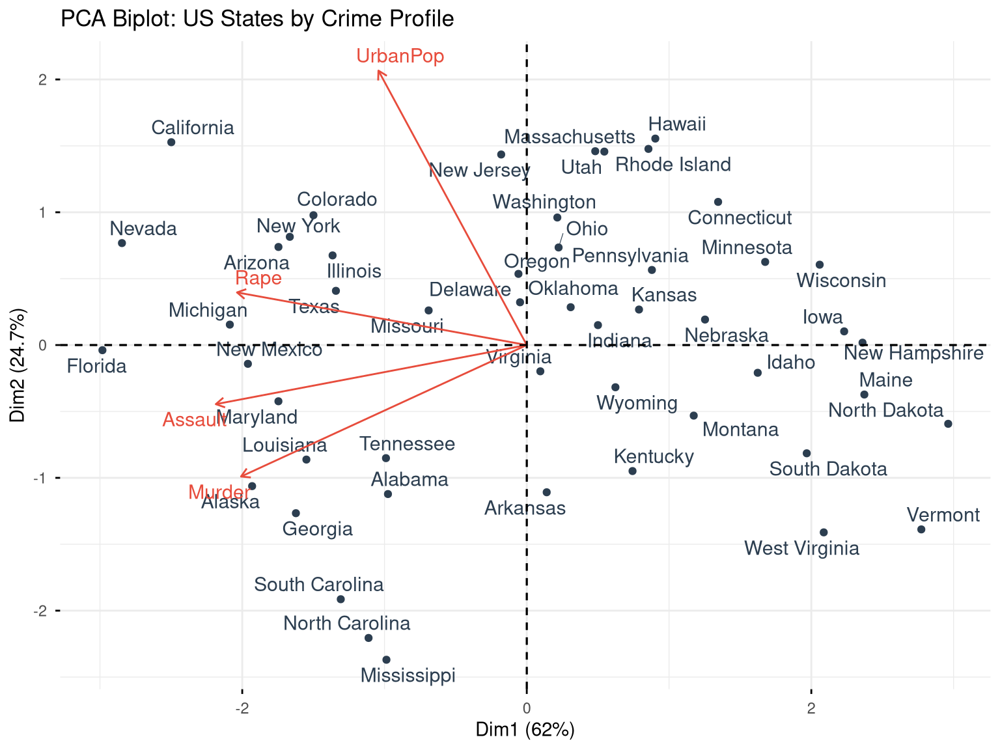
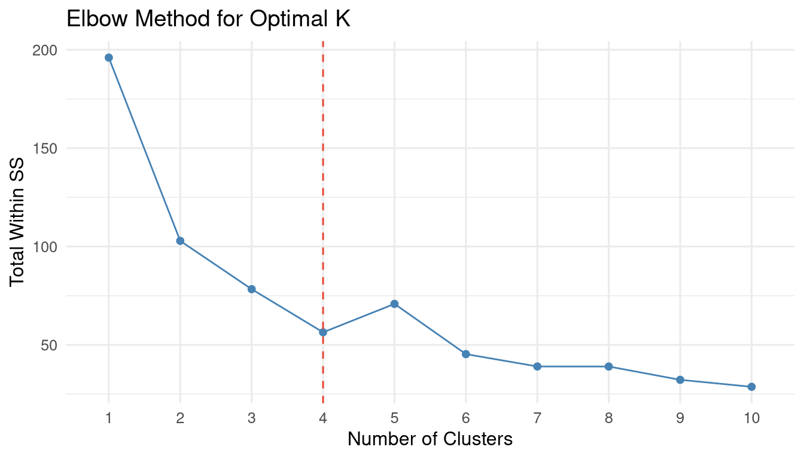
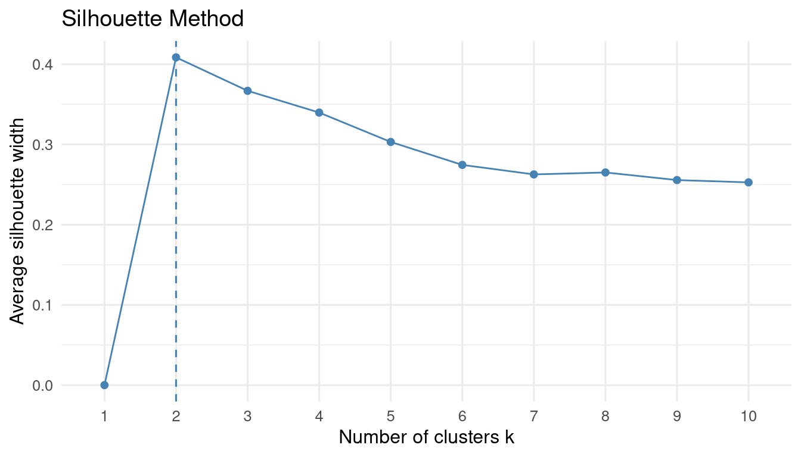
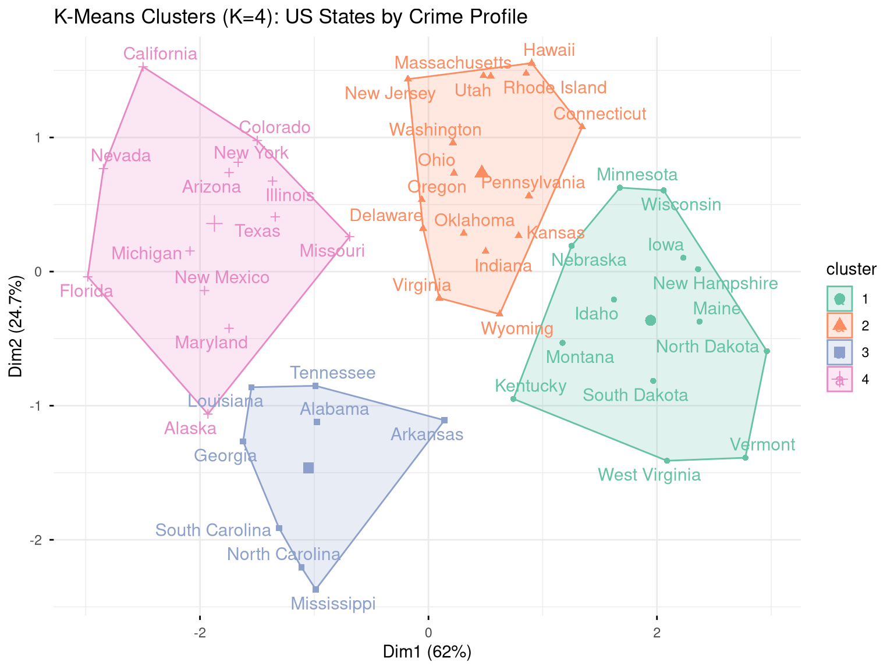
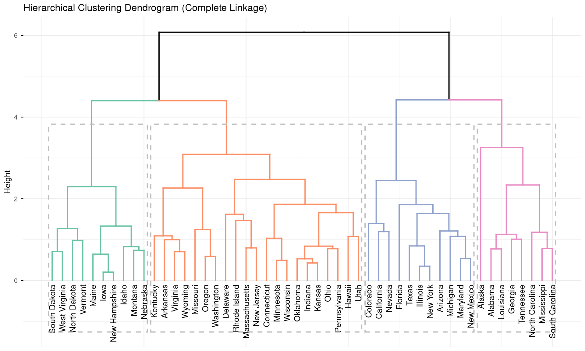

11 Multivariate Analysis
11.1 Principal Component Analysis
PCA reduces a high-dimensional dataset to a smaller set of uncorrelated principal components that capture the maximum variance in the data.
Code
# Scale variables before PCA (important when variables have different units)
pca_result <- prcomp(USArrests, scale. = TRUE, center = TRUE)
# Variance explained
summary(pca_result)
#> Importance of components:
#> PC1 PC2 PC3 PC4
#> Standard deviation 1.5749 0.9949 0.59713 0.41645
#> Proportion of Variance 0.6201 0.2474 0.08914 0.04336
#> Cumulative Proportion 0.6201 0.8675 0.95664 1.00000Code
fviz_eig(pca_result,
addlabels = TRUE,
barfill = "#3498db",
barcolor = "white",
linecolor = "#e74c3c",
ggtheme = theme_minimal(base_size = 12)) +
labs(title = "Scree Plot: Variance Explained by Each PC")
Code
fviz_pca_biplot(
pca_result,
repel = TRUE,
col.var = "#e74c3c",
col.ind = "#2c3e50",
label = "all",
ggtheme = theme_minimal(base_size = 11)
) +
labs(title = "PCA Biplot: US States by Crime Profile")
11.1.1 Interpreting PCA
Code
# Variable loadings (how much each variable contributes to each PC)
pca_result$rotation
#> PC1 PC2 PC3 PC4
#> Murder -0.5358995 -0.4181809 0.3412327 0.64922780
#> Assault -0.5831836 -0.1879856 0.2681484 -0.74340748
#> UrbanPop -0.2781909 0.8728062 0.3780158 0.13387773
#> Rape -0.5434321 0.1673186 -0.8177779 0.08902432
# State scores on each component
head(pca_result$x)
#> PC1 PC2 PC3 PC4
#> Alabama -0.9756604 -1.1220012 0.43980366 0.154696581
#> Alaska -1.9305379 -1.0624269 -2.01950027 -0.434175454
#> Arizona -1.7454429 0.7384595 -0.05423025 -0.826264240
#> Arkansas 0.1399989 -1.1085423 -0.11342217 -0.180973554
#> California -2.4986128 1.5274267 -0.59254100 -0.338559240
#> Colorado -1.4993407 0.9776297 -1.08400162 0.001450164
# Proportion of variance
prop_var <- (pca_result$sdev^2) / sum(pca_result$sdev^2)
cumsum(prop_var)
#> [1] 0.6200604 0.8675017 0.9566425 1.000000011.2 K-Means Clustering
K-means partitions observations into K groups by minimising within-cluster sum of squares.
Code
# Scale the data first
arrests_scaled <- scale(USArrests)11.2.1 Choosing K
Code
fviz_nbclust(arrests_scaled, kmeans, method = "wss") +
geom_vline(xintercept = 4, linetype = "dashed", colour = "#e74c3c") +
labs(title = "Elbow Method for Optimal K",
x = "Number of Clusters", y = "Total Within SS") +
theme_minimal(base_size = 12)
Code
fviz_nbclust(arrests_scaled, kmeans, method = "silhouette") +
labs(title = "Silhouette Method") +
theme_minimal(base_size = 12)
Code
set.seed(42)
km_result <- kmeans(arrests_scaled, centers = 4, nstart = 25)
# Cluster sizes
table(km_result$cluster)
#>
#> 1 2 3 4
#> 13 16 8 13
# Cluster centres (in original scale)
km_result$centers
#> Murder Assault UrbanPop Rape
#> 1 -0.9615407 -1.1066010 -0.9301069 -0.96676331
#> 2 -0.4894375 -0.3826001 0.5758298 -0.26165379
#> 3 1.4118898 0.8743346 -0.8145211 0.01927104
#> 4 0.6950701 1.0394414 0.7226370 1.27693964Code
fviz_cluster(
km_result,
data = arrests_scaled,
palette = "Set2",
ellipse.type = "convex",
repel = TRUE,
ggtheme = theme_minimal(base_size = 11)
) +
labs(title = "K-Means Clusters (K=4): US States by Crime Profile")
11.3 Hierarchical Clustering
Hierarchical clustering builds a dendrogram — a tree that shows how observations merge into clusters at different distances.
Code
fviz_dend(
hclust_result,
k = 4,
k_colors = RColorBrewer::brewer.pal(4, "Set2"),
rect = TRUE,
label_cols = "black",
cex = 0.7,
ggtheme = theme_minimal(base_size = 10)
) +
labs(title = "Hierarchical Clustering Dendrogram (Complete Linkage)")
Code
# Cut the tree to get 4 clusters
hclust_groups <- cutree(hclust_result, k = 4)
table(hclust_groups)
#> hclust_groups
#> 1 2 3 4
#> 8 11 21 10
# Compare K-means vs. hierarchical
table("K-means" = km_result$cluster, "H-clust" = hclust_groups)
#> H-clust
#> K-means 1 2 3 4
#> 1 0 0 3 10
#> 2 0 0 16 0
#> 3 7 0 1 0
#> 4 1 11 1 011.4 Exercises
Apply PCA to the
mtcarsdataset. How many components are needed to explain 80% of variance? Create a biplot and describe which cars cluster together.Use K-means clustering (choose K using the elbow method) to group countries in the
gapminder2007 dataset usinggdpPercapandlifeExp. Map the clusters using a scatter plot coloured by cluster.Compare K-means and hierarchical clustering on the
irisdataset. How well do the clusters recover the true species labels? Compute accuracy.Challenge: Apply PCA to India’s district-level agricultural data (multiple crop yields as variables). Create a map (using
sfpackage) coloured by cluster membership to show agricultural zones.